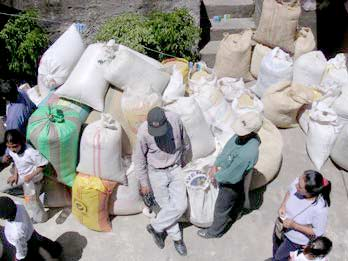
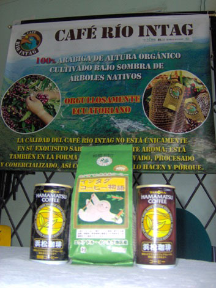

Primeros pasos de la la AACRI
En una conversación con el Periódico INTAG, Edmundo Varela, presidente de la AACRI, dijo que hace 12 años la gente no tenía cultura cafetalera. Pero sí había café: los agricultores lo vendían a los intermediarios a “precio de huevo” y no les importaba la calidad del grano. Los intermediarios compraban en ese entonces a 35 dólares el quintal de café, la AACRI pagaba 70 dólares.
De que era rentable la producción cafetera lo comprobó Rigoberto Piedra. El miembro fundador de la organización tostaba café y lo ofrecía en hoteles y restaurantes de Otavalo. En vista de este resultado, la AACRI se metió de lleno al cultivo. El señor Varela afirma que buscaba el apoyo del programa Desarrollo Rural Integral (DRI), que trabajaba con fondos de la cooperación española. Consiguió los recursos para comprar una piladora, un molino y una tostadora a manivela. Al comercializar el producto, los miembros de la AACRI decidieron ponerle “Café Rio Intag” en honor al río. Así es como empezó a trabajar la AACRI.
El presupuesto del DRI sirvió para contratar a José Cueva como director ejecutivo. El señor Cueva quería impulsar el cultivo de café. El equipo de la flamante Asociación se dedicó a conseguir financiamiento y encontró el apoyo del Fondo Ecuatoriano Canadiense a través de la Corporación Ecuatoriana de Caficultores (CORECAF). Con este dinero, contrató como técnicos de campo a cuatro inteños, puso al día la cuestión administrativa, equipó una oficina, compró un vehículo y sembró más hectáreas de café.
La ingeniera Luz Amparo Holguín, una colombiana experta en café, encabezó el equipo técnico. Estuvo a cargo de la capacitación de Janet Dávila, Hugo Rivera, Nelson Vetancourt y los hermanos Freddy y Wilson Villalva. Se acabó el proyecto y los únicos que quedaron fueron Nelson y Freddy.
En ese entonces, el presidente de AACRI fue Joel Cabascango, seguido por Guido Cousín, Polivio Pérez y Franklin Vaca. Cada uno tuvo éxitos y fracasos.
Los gerentes fueron Javier Morales y Hernando Pereira quienes también tuvieron sus problemas: no había dinero para comprar café y la tostadora no abastecía los pedidos, dejando a los clientes insatisfechos. En el período del señor Vaca, se contrató a Ramiro Fuertes, gerente actual.
{niftybox background=#F0F0EE,textcolor=green,font=, width=, height=,clear=}
EN LA PLANTA DE AACRI
EL MEJOR CATADOR DE CAFE
Franklin Montenegro participó en un curso de catación de café en Manisales, Colombia hace dos años. Los dirigentes de la AACRI le asignaron porque controla en la planta la calidad del café tostado y café verde. Aprendió los tipos, sabores y cualidades del café. Entre las 26 personas de varios países que participaban en la capacitación, el inteño alcanzó el primer lugar en el concurso que la finalizaba y que consistía en analizar el café en términos de aroma, sabor, cuerpo, acidez, uniformidad y taza limpia.
El señor Montenegro nos explicó que las habilidades del catador surgen de lo sensorial, esto es, el olfato y el paladar. La experiencia fue buena, tanto para él como para la AACRI. “Quedamos bien a nivel mundial y nos hicimos conocer porque antes no se hablaba […] que en Imbabura se producía café”.
{/niftybox}
Un crecimiento a buen ritmo
Fue duro sacar adelante a la AACRI. Lo único con que contaba era un vehículo y el mobiliario de la oficina. “Entrando que entrando”, dijo el señor Varela, “tuve que pagar deudas, potenciar el equipo y hacer un plan estratégico”. En ese entonces la AACRI contaba con 150 socios, 16 hectáreas de café sembradas y agricultores que tenían entre 50 y 100 plantas de café. Acopió de 300 a 400 quintales cada cosecha.
Desde el período del señor Varela, la extensión cultiva ha crecido a 220 hectáreas, la producción a 2300 quintales y el número de socios a 450, la mayoría bien comprometida, hecho que se evidencia en las asambleas anuales de la organización.
Asimismo, el señor Varela dijo que la gente ahora ama a su tierra y le llena de orgullo decir “Soy de Intag”, lo que antes hasta vergüenza les daba. También el compromiso de los caficultores ha tenido una crecida enorme. Antes el grano recibido en la planta era el 20 por ciento café A, o sea, de máxima calidad, y el 80 por ciento tipo B y C. En la actualidad, el 94 por ciento es café A.
Financiamiento y bienes
“Un logro importante”. Así lo califica el señor Varela el comodato por 25 años del campamento en Apuela del Ministerio de Obras Públicas. En este sitio se ubica la plata de la AACRI con la procesadora, el centro de acopio, el laboratorio de microorganismos y el área de empacado. Con la readecuación del campamento hoy se tiene una infraestructura digna para que los trabajadores se sientan satisfechos de estar en la organización. Los recursos han sido bien invertidos y por eso los financiadores no han dudado en dar el dinero, según el señor Varela. El compromiso de la Cooperación Española, Fondos Ágiles, Xarxa Consum Solidary, Agencia de Desarrollo de los Estados Unidos (USAID) y el programa de Bosques Neblina Probona han sido claves en el progreso de la organización.
Comercialización
Según el señor Varela, el Japón fue un punto clave en la comercialización del café verde. El mercado nacional también ha crecido. España es otro punto importante para la distribución del producto. Con el gobierno de Cataluña, se tiene un acuerdo para distribuir la marca Café Directo del Ecuador. Xarxa es otro socio que distribuye el café en tiendas de comercio justo. También existen puntos de venta en Portugal, Estados Unidos, Canadá, Alemania y, próximamente, Corea del Sur. La marca Café Rio Intag está muy bien posicionada y el café verde tiene buena demanda en el país, aseguró.
En las estadísticas nacionales, la Asociación ya aparece como productor de café especial. Por eso el Ministerio de Agricultura, Ganadería, Acuacultura y Pesca (MAGAP) pidió el apoyo a la AACRI para armar el sistema cafetalero del país. La propuesta es renovar y sembrar 50 mil hectáreas de café para que se beneficien 200 mil familias.
En la caficultura orgánica se aplicará el paquete técnico de la AACRI. Asimismo, la Asociación participará en la reformulación de la Ley del Café. Dijo que en la actualidad la Cofenac dirige el destino del café. Con sus políticas privilegian a las grandes industrias. Si se sigue por este camino, dejarán de cultivarlo los 200 mil pequeños productores. En cuanto al mercado, el señor Varela afirmó que está asegurado.
Equipo profesional
La mayoría del personal técnico de AACRI es profesional gracias, en gran parte, al apoyo de la cooperación estadounidense, USAID. Ahora la AACRI cuenta con una tostadora nueva, un laboratorio de calidad para producir insumos orgánicos, dos vehículos y una construcción digna. La AACRI ha generado 20 puestos de empleo en tiempos de cosecha. Pese a las limitaciones que aún existen, la Asociación ha sido premiada entre 40 empresa como el mejor ejemplo el año pasado.
En cuanto a otros proyectos, el señor Varela dijo que al presentarse una oportunidad hay que aprovecharla. Por eso la Asociación se ha involucrado en la construcción de cinco puentes que les sirven a todos, no sólo a los socios de la organización. También dijo que la AACRI fue clave para que Manos Unidas apoyara el proyecto del Consorcio Toisán. Asimismo, manifestó que sus viajes al exterior han traído buenos resultados, como el proyecto financiado por Xarxa ejecutado por el Consorcio, los estudios de HidroÍntag y los contactos con la USAID.
A los socios se les ha ayudado con herramientas subsidiadas, insumos orgánicos y muchos beneficios más. Asimismo, la organización es dueña de dos empresas productivas: el laboratorio y la plata procesadora de café. Además impulsa el turismo. En fin, dijo que la AACRI es una familia compuesta por productores, técnicos, vendedores y consumidores. Y es un referente a nivel local, nacional e internacional.
{niftybox textcolor=green }
LAS TAREAS DIARIAS
EL CULTIVO DE CAFÉ
La AACRI compró este año el café de unas 130 fincas. Los caficultores cultivan y cosechan el café según un calendario fijo y apoyado por un equipo técnico.
El año cafetero empieza en octubre, cuando hay lluvias, con la siembra. A partir de diciembre, se preocupa por la salud de las plantas. Si se encuentra las primeras señales de una enfermedad, el laboratorio de la AACRI prepara un antídoto de ingredientes naturales de los bosques. En marzo los socios regulan la sombra. Para lograr la cantidad de sol adecuada, los caficultores intercalan plantas de hojas grandes y fraccionadas entre las matas, por ejemplo, el plátano. En abril, mayo y junio los frutos se colorean. De julio hasta septiembre los caficultores realizan la cosecha, un proceso selectivo en que sólo cogen los frutos maduros. Para acabar con la cosecha en dos meses, cuatro a cinco personas trabajan por hectárea. Además de estas actividades, los caficultores abonan sus matas dos veces al año.
Con el programa de certificación orgánica, los procesos han cambiado mucho durante los últimos años. La AACRI apoya a los socios a cumplir con todas los requisitos, por ejemplo, como ya mencionado con la preparación de bioinsecticidas y biofungicidas. Además, el equipo técnico del campo visita las fincas para aconsejarles a los caficultores en la solución de problemas y lograr la mayor cantidad de café de excelente calidad. Según Franklin Navarrete, miembro del equipo, en los últimos años la calidad ya se ha mejorado mucho y cada año hay más café del tipo A.
{/niftybox}
PASO POR PASO
PROCESANDO CAFÉ DE CALIDAD

Durante los diez años de trabajo, la AACRI ha logrado construir una planta con todas las herramientas necesarias para procesar el café: el centro de acopio, las marquesinas, las bodegas, la empaquetadora y máquinas que incluyen la piladora, la zaranda, la tostadora y el molino. Durante la época de cosecha genera puestos de trabajo para varias personas. Todo esto le permiten tener una planta procesadora con capacidad de producción de café de calidad para los mercados local, nacional e internacional.
Acopio y pilado del café
El procesamiento del café en la planta de la AACRI inicia con el acopio del grano en pergamino, o sea, el grano en seco. Los técnicos animan a los agricultores a que entreguen de café en este estado y el personal de la planta controla la calidad y la humedad y verifica el peso.
Según Franklin Montenegro, técnico de la planta, lo ideal es que el grano de café no tenga más que el 12 por ciento de humedad para poder pilarlo (sacar la cascara que se le llama pergamino). Este pasos también es importante para que el caficultor no reciba un precio menor por la humedad. La piladora tiene capacidad de entre 40 y 50 quintales diarios.
La selección del grano trae beneficios
El grano pasa por una zaranda que tiene capacidad de producción de 30 quintales por día. Este aparato clasifica el grano en tres tamaños, o cribas: 18, 17 y 16. El grano más grueso es destinado a la exportación en verde. Los demás se exportan procesados. Según el técnico, el cliente exige esta clasificación. Además, ayuda al momento de tostar: los granos más pequeños se queman más rápido.
El proceso del café no solamente se basa en máquinas. La selección manual emplea unas 12 personas, en su mayoría mujeres. Consiste en quitar defectos e impurezas: granos con mayor grado de acidez, negros y brocados, piedras, palos y otras imperfecciones. El rendimiento de la trabajadora depende de la calidad del café: A, B y C. En el caso del café tipo A, el más limpio, puede seleccionar dos o tres quintales en el día. En los otros tipos, que tienen más defectos, selecciona, máximo, un quintal en el día. El técnico afirma que es un trabajo bastante cansado pero el más indispensable dentro del proceso. Si los defectos no se eliminan, el café tendrá un mal olor y mal sabor al momento de servirlo en la taza.
Tostado y empaquetado
 Dependiendo del destino, una vez seleccionado el café ya puede ser empaquetado. Si el cliente prefiere café tostado, la planta está equipada para este proceso con dos tostadoras cuya capacidad es de unos cinco quintales diarios.
Dependiendo del destino, una vez seleccionado el café ya puede ser empaquetado. Si el cliente prefiere café tostado, la planta está equipada para este proceso con dos tostadoras cuya capacidad es de unos cinco quintales diarios.
La planta también cuenta con un molino y un sistema de empaquetado. El molino tiene una capacidad de producción de un quintal cada 15 minutos.
Para el mercado local y nacional el café es empaquetado en fundas de cabuya hechas a mano. Unas 30 mujeres de comunidades inteñas las elaboran. Otros clientes prefieren el café empacado en fundas de aluminio con válvula, empaque elaborado en Colombia que mantiene el café más tiempo en óptimas condiciones. La válvula permite que el oxigeno del café salga y no vuelva a ingresar. Para la exportación del café pilado hay el empaque de yute, material procesado en la India. El técnico dijo que antes exportaban en sacos de cabuya pero que los estándares de exportación ya no permiten con este tipo de material. Próximamente habrá un nuevo empaque, el del café selecto, destinado para mercados más especiales, como la cadena nacional de supermercados Supermaxi.
Durante la época de cosecha y de exportación, que va desde abril hasta noviembre, en la planta se generan unos 22 puestos de trabajo. De manera permanente laboran ocho personas.
El café no siempre llega en óptimas condiciones
Según el técnico, varios agricultores todavía no entregan el grano con el 12 por ciento de humedad, el techo establecido. Algunos no ponen en práctica la metodología del secado, y otros, que producen más, no tienen dónde secar y optan por vender rápido a la planta. El caficultor puede entregar el producto en estas condiciones porque la planta cuenta con marquesinas (camas secadoras). El señor Montenegro indicó que un patio de cemento es una opción para el caficultor sin suficientes marquesinas, pero que no debe estar contaminado con polvo, elemento perjudicial para la calidad del café. En todo caso, dijo, se puede secar al aire libre.
Otro problema que mencionó es la falta de una adecuada fermentación después de la cosecha. Esto se evidencia cuando el pergamino del café adquiere un tono amarillo al secarlo. También baja de calidad al momento de servir en la taza. Sin embargo, añadió, la mayoría de agricultores ya conocen el proceso del fermentado. Asimismo, hay muy pocos casos de agricultores que no despulpan el café el mismo día de la cosecha. Esto provoca una fermentación inadecuada del café que también da un mal sabor en la taza.
La cosecha del café muy tierno o muy maduro también es perjudicial. En el primer caso, es difícil darse cuenta hasta que llegue a la tostadora, cuando no se tuesta. El grano que ya es demasiado maduro tiene el pergamino muy amarillo.
Servicios con pocos resultados
El encargado de la planta mencionó que antes les compraban a los productores el café cuando todavía estaba con la pulpa (cerezo). La planta tenía una máquina despulpadora. Sin embargo, a los agricultores no les motivó la venta en cerezo. Afirmó que a los agricultores les parecía muy bajo el pago de 15 y 16 dólares el quintal. Sin embargo, de cinco quintales en cerezo se obtiene sólo uno en pergamino, dando el mismo resultado, en términos de pago, después de restar costos de la mano de obra que requiere hasta llegar al estado en pergamino. De todas formas, ya no existe el servicio. Además, la mayoría de los agricultores ya tiene su propia despulpadora que la AACRI les ayudó compara.
El café para la exportación y el mercado local
El principal consumidor del café de la AACRI es el Japón, país asiático a donde va entre 30 y 40 por ciento del café en verde (sin procesar). El resto queda en la planta para ser procesado y luego vendido en el mercado local, nacional e internacional. Según el señor Montenegro, España es el principal consumidor de café procesado. En el ámbito nacional, el principal mercado está en Quito. En la Zona, el café es vendido en tiendas de las diferentes parroquias.
Uno de los objetivos de la AACRI es producir café de manera orgánica. Dentro de los 450 socios de la AACRI, unos 120 ya tienen el certificado o sello orgánico otorgados por una certificadora alemana. El producto de estos agricultores es destinado directamente para la exportación al Japón donde los consumidores exigen café cien por ciento orgánico. Recalcó que todos los productores están dentro de la línea orgánica pero aún no tienen el sello.
En la planta este año se han acopiado unos 2100 quintales. El 80 por ciento es de socios de la Asociación y el resto es de agricultores no socios. La Asociación compra el café a todos pero el socio tiene ventajas: reciben apoyo con materiales, herramientas e insumos para el cultivo. Sin embargo, no hay mucha variación en el precio porque los granos de café recibidos por socios y no socios son de la misma calidad.
Finalmente, el señor Montenegro pide a los agricultores que se motiven en la producción del café. Afirma que este cultivo tiene futuro porque es un producto apetecible a nivel mundial y tiene un mercado sumamente grande: “El café sí, es rentable”.
CON CALIDAD ORGÁNICA
INSUMOS PARA MEJORAR EL CULTIVO DE CAFÉ
La producción de un producto en grandes cantidades corre el riesgo de ser atacado por plagas y enfermedades. Por eso, la AACRI, al incrementar la producción de café, cuenta con un laboratorio para producir insumos que ayudan a controlar estas amenazas sin la utilización de agroquímicos. Esto es posible aprovechando la existencia de los mismos microorganismos del suelo.
El proceso de obtención de los insumos inicia con el aislamiento de los microorganismos en los cultivos. Según Karina Cevallos, encargada del laboratorio, en Íntag, el aislamiento se hizo en los cultivos de café y bosques de diferentes pisos climáticos. Para ingresarles al laboratorio, seleccionaron las mejores sepas (muestras) y las clasificaron en grupos. En el laboratorio les alimentan para que se reproduzcan. Asimismo, aceleran la reproducción en comparación con lo que harían en el suelo. Estos microorganismos se desarrollan mejor en sustratos de arroz, cáscara de café y cebada. Los microorganismos benéficos así producidos son de cuatro tipos:
Control de plagas y enfermedades, una clase con tres sub clases:
Los antagonistas que controlan enfermedades causadas por otros hongos, los
hentomopatógenos que controlan plagas, y los nematófagos, microorganismos que se alimentan de huevos y adultos de nemátodos.
 Otro tipo de microorganismos mejora la calidad y la actividad microbiológica del suelo. Incluye loes hemas, hongos que aceleran la descomposición de la materia orgánica para proporcionar los nutrientes que requiere la planta. También están las bacterias promotoras de crecimiento que trabajan como fitohormonas para que la planta crezca protegen la raíz.
Otro tipo de microorganismos mejora la calidad y la actividad microbiológica del suelo. Incluye loes hemas, hongos que aceleran la descomposición de la materia orgánica para proporcionar los nutrientes que requiere la planta. También están las bacterias promotoras de crecimiento que trabajan como fitohormonas para que la planta crezca protegen la raíz.
Los insumos son aplicados en el suelo y actúan desde la raíz.
La señorita Cevallos afirma que los microorganismos son para prevenir, no para curar, enfermedades y ataques de plagas. Por eso, pide a los agricultores que utilicen estos productos desde que la planta está pequeña para evitar daños en los cultivos. Señala que en algunos casos es necesaria la aplicación de productos químicos porque no existe equilibrio entre microorganismos malignos y benéficos. Los insumos pueden perder su efectividad si se aplican con productos químicos porque éstos matan a los microorganismos benéficos. Afirma que los beneficios de los microorganismos aparecen poco a poco pero que con el tiempo van a quedar en el suelo y se va a recuperar el equilibrio. Con esta metodología, los cultivos son más sanos para el consumo y se conserva la calidad del suelo, aseguró.
La señorita Cevallos recomienda que cuando los granos de café empiezan a formarse, se debe aplicar bauberia; esto en los meses de marzo y abril. La aplicación de metarrisium se sugiere en los cafetales que ya han pasado la cosecha para controlar la broca; los granos caídos son el origen de la plaga. De noviembre a febrero, se sugiere la aplicación del biocatalizador para mejorar la fertilidad. Según la señorita Cevallos, con la aplicación de estos insumos, la producción del café ha mejorado considerablemente y en ciertos casos se ha duplicado. Estima que un 90 por ciento de los productores de la línea orgánica ya los utilizan. Los microorganismos que más utilizan los caficultores son: tricoderma para el manejo de viveros; bauberia y metarrisuim en época de fructificación y cosecha para el control de la broca; y biocatalizador para mejorar la fertilidad del suelo.
Puesto que el laboratorio pertenece a los socios de la AACRI, los insumos los adquieren a precios cómodos, en la mayoría de casos, hasta con el 50 por ciento de descuento.
El equipo también está trabajando en un proyecto para investigar los efectos de los microorganismos a largo plazo. La idea es identificar la dosis que debe aplicarse y con qué frecuencia. En el caso de presentarse un efecto negativo, tendrán que buscar la forma para controlarlo. Asimismo, a pesar que los insumos son orgánicos, la señorita Cevallos recomienda al agricultor evitar el contacto con los ojos, la nariz y la boca. Para la aplicación, el agricultor debe utilizar el equipo adecuado como mascarilla, gafas y guantes.
La señorita Cevallos también habló de otras empresas que están interesadas en aplicar los productos del laboratorio. Dijo que Cereales Andinos tiene interés en aplicarlos en la quinua. Asimismo, la empresa Jugos Fácil los ha probado en el cultivo de mora con buenos resultados. La florícola Flor de Azama está interesada en el producto para acelerar la descomposición de la materia orgánica. Y la Fabricafes los quiere aplicar en cultivos de café.
Por otro lado, la señorita Cevallos afirma que por el momento la producción es semindustrial. El producto todavía tiene la posibilidad de adquirir otras transformaciones para que tenga más tiempo de duración y se pueda ofrecer en otra presentación al mercado comercial. Añade que la presentación no tiene nada que ver con la eficacia del producto: de hecho los microorganismos de la AACRI funcionan a las mil maravillas.
Finalmente, la señorita Cevallos propone que esta alternativa sea difundida para aplicarla en otros cultivos.